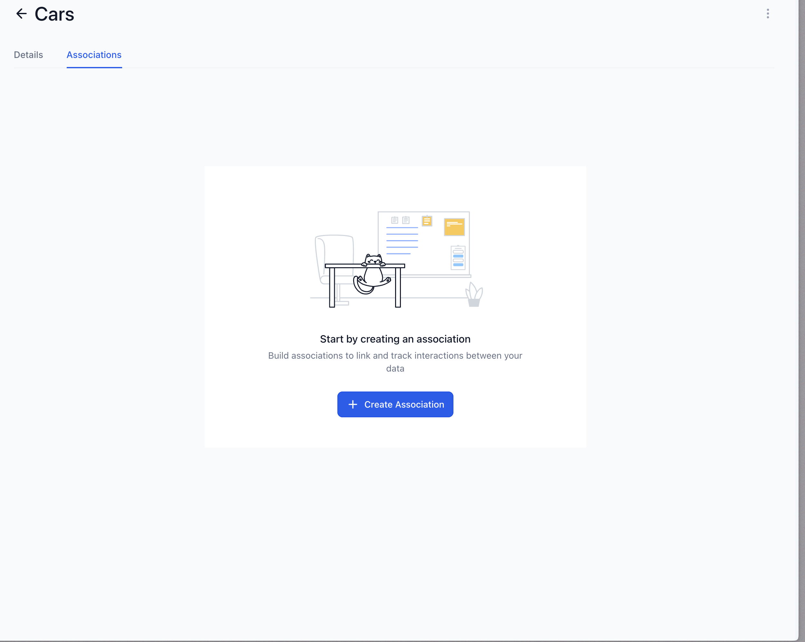
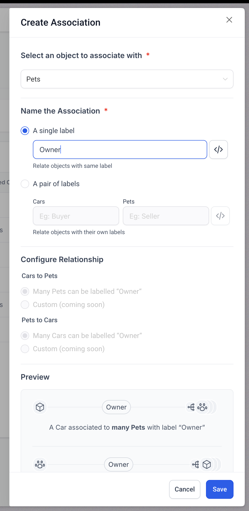
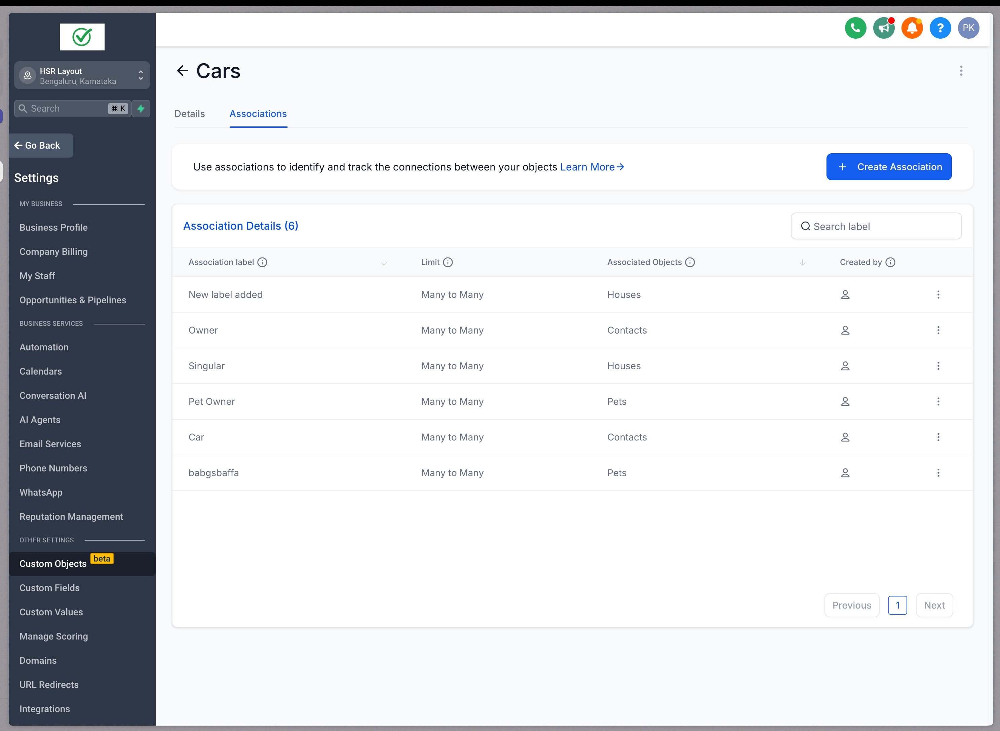
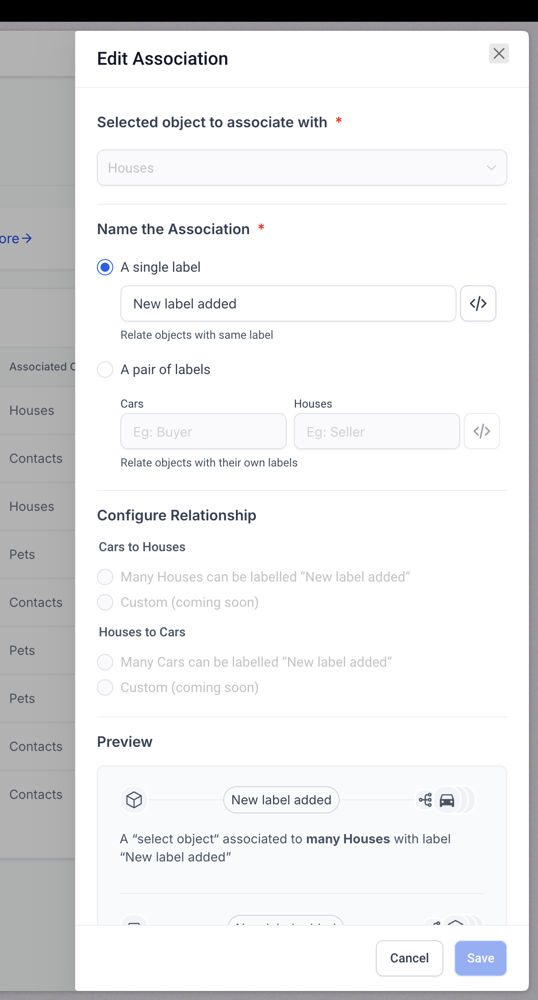
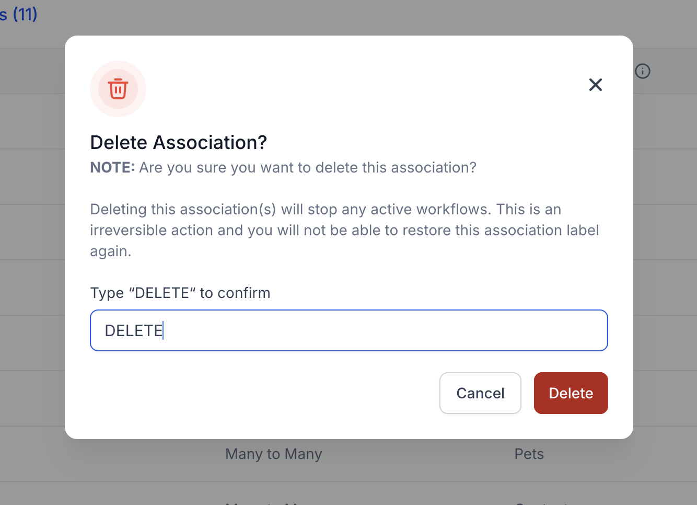
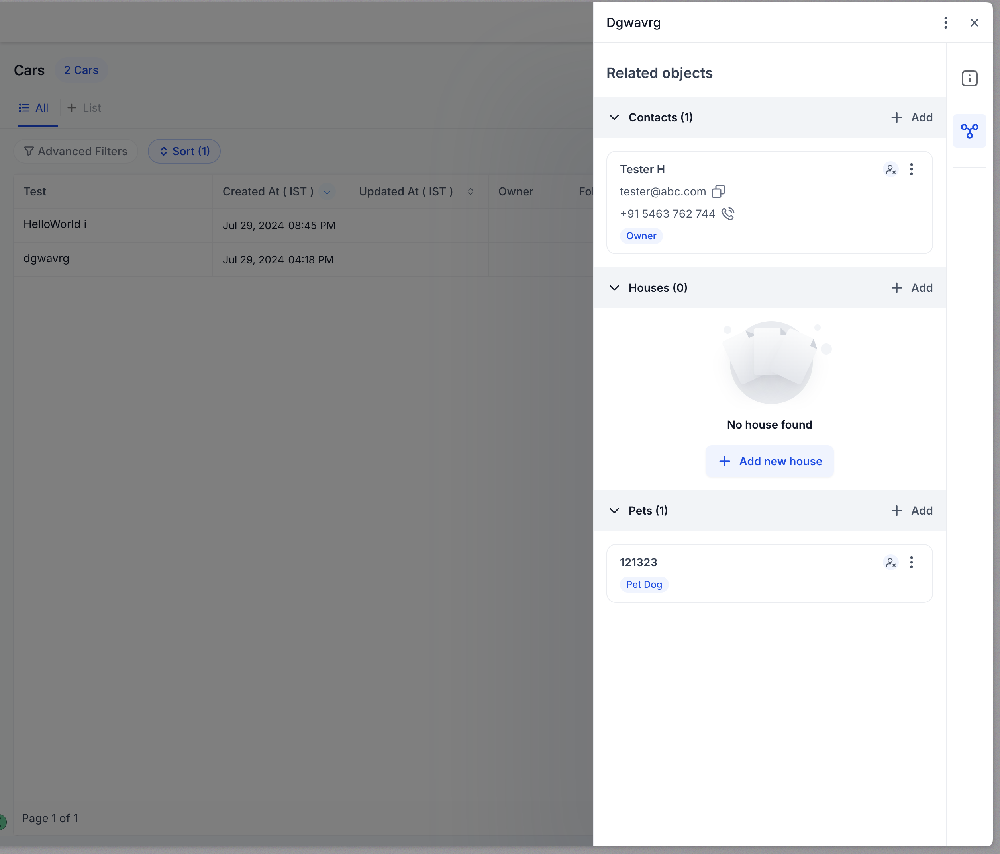
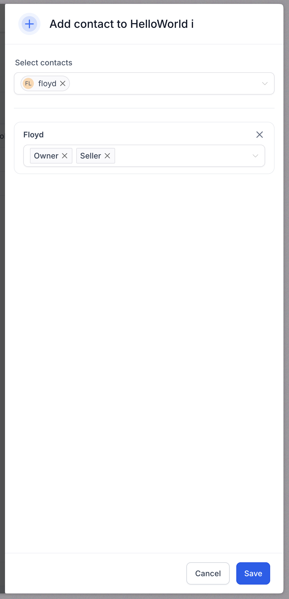

This document provides a comprehensive overview of the "Association for Custom Objects" feature, detailing how users can establish associations between custom objects and contacts or between custom objects themselves.
In This Article
Currently we support association of contacts to other contacts or custom objects. Also - we support association of custom objects with any other custom objects.
Creating Associations
Steps to Create Associations:
Access the Custom Objects Section:
- Navigate to Subaccounts > Settings > Objects.
- Select the object you wish to create an association for.
- Click on the Associations tab.

- Set Up Labels:
- You can choose to set a single label or a pair of labels to define the relationship.
- Example: For associating a car with its owner, you might set the labels as “Owner” and “Car."

All current associations are many-to-many in nature.
- Save and Apply:
- After naming and setting up the association labels, click Save.
- You can now use these labels to associate records in your custom objects or between a custom object and a contact.
You can create upto 10 association labels between two contacts or between a contact-to-custom object combination
Managing Associations
View Associations:
- Go to the record details of the object.
- On the right side panel, you will find the associations listed under the Related Objects section.

Editing Associations:
- If needed, you can remove an association by selecting the association label, clicking on the kebab menu (3 dots icon) and selecting Edit
- The label name can be updated but not the internal name for the same.

Removing Associations:
- If needed, you can remove an association by selecting the association label, clicking on the kebab menu (3 dots icon) and selecting delete
- Type "DELETE" in the text box and then click the delete button.
- Note that the delete action can only be performed if there are no existing relations between two different records using the mentioned label.

Associating Two Records Using One or Multiple Labels
Access the Records:
- Navigate to the Custom Objects section or Contacts where your records are stored.
- Open the detail view of one of the records you wish to associate.
Initiate the Association Process:
- On the right-hand side panel, locate the Related Objects section.
- Click on the Association icon (often represented as a link or chain icon) to begin setting up the association.

Select the Object to Associate With:
- In the association setup window, choose the object you want to associate with the current record. This can be another custom object or a contact.
- Select the labels you want to associate the two objects with
- Confirm the setup by clicking Save.

Finalizing the Association:
- The association will now appear under the Related Objects section of the record’s details.
- You can click on the associated object or contact to view the relationship and modify or delete it as needed.
- You can also add the associated objects as columns in the list view for quickly accessing which records is any object record associated with.
Each label can associate a maximum of 1000 records
Learn more about contact to contact associations here.